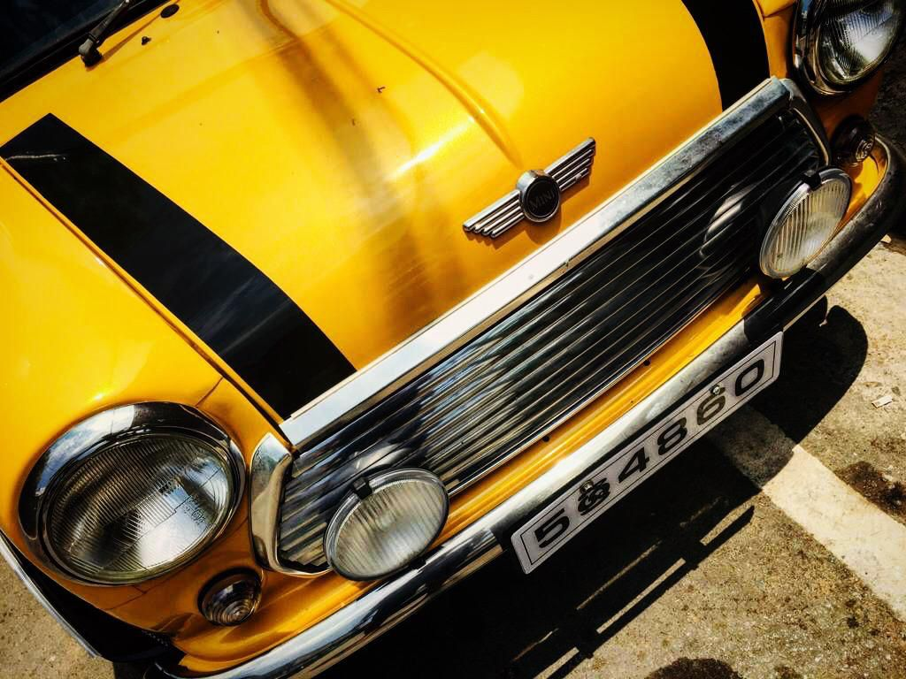
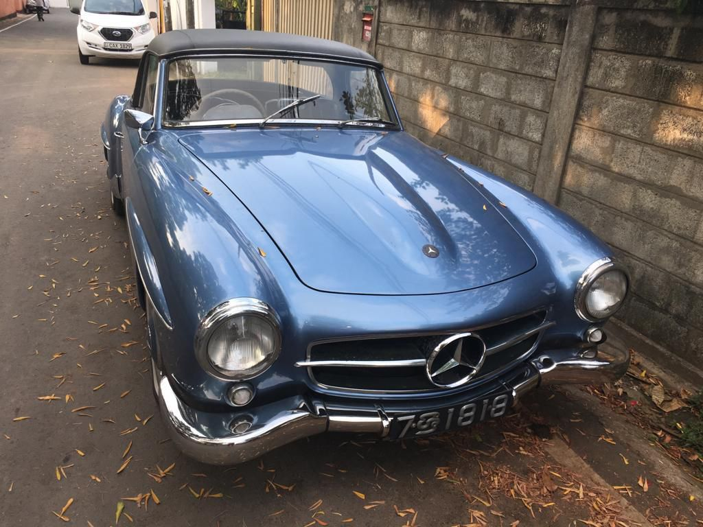

Bridging Car Enthusiasts
with Trusted Garages.
Sri Lanka's automotive passion deserves a smarter, digital home.
While the world races ahead digitally, Sri Lanka's vibrant car culture remains largely offline. Dream Drive is the bridge that finally changes that — putting local garages on the digital map.
Forget word-of-mouth gambles. Our machine learning engine profiles every garage by specialty — so your dream machine lands in exactly the right hands, every single time.
From classic restoration builds to high-performance modifications, Dream Drive speaks your language. This is a platform crafted by enthusiasts, for enthusiasts — not just a generic directory.
No more endless searching. Dream Drive transforms a fragmented market into a streamlined community — empowering garage owners and giving you one-click access to the expertise your car deserves.
The Sri Lankan automotive industry faces a significant digital engagement gap, where car enthusiasts still rely on time-consuming physical searches or word-of-mouth for specialized services.
Dream Drive bridges this gap by providing an intelligent web application tailored for young enthusiasts (aged 18–35).
By utilizing machine learning for specialty-based profiling, the platform offers a one-click connection to local garages. The final system fosters a digital community through restoration showcases and social media integration, transforming how automotive services are discovered and consumed in Sri Lanka.

Analysis of existing platforms reveals a heavy reliance on outdated listing methods. Current literature emphasizes the critical need for modernized trust-verification in peer-to-peer automotive services.
There is a severe lack of centralized visibility and AI-driven trust-verification systems specifically tailored for independent mechanics and young car enthusiasts.
A massive digital disconnect exists between digitally-native enthusiasts and local garages, leading to trust deficits and inefficient service discovery.
Agile software development paired with iterative user testing. Initial data collection via quantitative surveys, followed by direct prototype testing with local garages.
The platform leverages Streamlit and Python for a high-performance interface, integrated with the Google Places API and Social Analytics. Machine Learning models are utilized to power the core trust-verification algorithms.

Primary academic documents outlining the scope, objectives, and final outcomes of the Dream Drive project.
Strategic frameworks defining market entry, revenue generation, and long-term business viability.
Visual slide decks showcased during various stages of the academic progress evaluations.
High-fidelity screen recordings and live system demonstrations of the Dream Drive application.
IT21385582- Undergraduate
Information Systems Engineering @ SLIIT - Malabe
Lecturer
Computer Systems Engineering Department @ SLIIT - Malabe